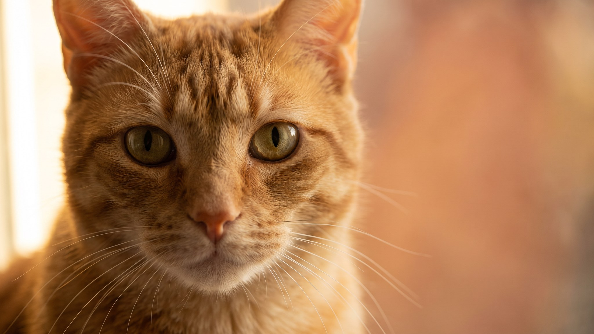

Дверь открывается, голоса становятся громче, кошка исчезает под кроватью, а собака крутится у прихожей. Гости меняют привычный порядок в доме сразу по нескольким направлениям. За 7 дней можно подготовить укрытие, отрепетировать спокойные действия и расписать правила визита.
🐾 Хотите понять, что питомец говорит вам?
Опишите ситуацию или пришлите видео в AnimaLife — AI разберёт поведение вашего питомца и подскажет, что делать. Бесплатно, ответ за минуту.
Разобрать поведение → Разобрать в MAX →
У вас iPhone? AnimaLife есть в App Store
Выберите помещение, куда гости точно не зайдут. Для кошки поставьте туда лоток, воду, лежанку и привычную коробку или домик. Собаке нужны её место, вода и долгая жевательная игрушка, если она привыкла к таким занятиям под присмотром. Оставьте вещь с запахом хозяина.
Дверь в комнату должна закрываться, а маршрут к ней оставаться свободным. Укрытие работает до прихода людей, а не после паники. Питомец должен проводить там часть обычного дня и выходить сам. Не закрывайте животное впервые за пять минут до звонка.
Кошке достаточно спокойно пользоваться комнатой, выводить её к людям необязательно. Собаке добавьте короткое занятие «сидеть» и «на место» вдали от входной двери. Если животное напрягается, вернитесь к предыдущему дню плана и сократите следующий подход.
Напишите короткие правила в сообщении: не брать животное на руки, не заглядывать в укрытие и не угощать едой со стола. Попросите сначала поставить сумки и снять верхнюю одежду, затем сесть. Собака может обнюхать гостя по своей инициативе, кошка имеет право остаться за дверью.
Если питомец подошёл, гость держит руку опущенной и ждёт. Ласкают только после спокойного контакта и прекращают, когда животное отходит. Детям взрослый показывает этот порядок отдельно. Знакомство считается удачным и без поглаживания.
Правила касаются и прихожей: гости не окружают собаку, не наклоняются над кошкой и не закрывают им путь к отступлению. Сумки ставят так, чтобы животное не могло вытащить лакомство или лекарства хозяев. Об этом удобно предупредить до визита одним сообщением в общем чате.
За час до встречи сохраните обычное кормление и игру. Собаку выгуляйте по знакомому маршруту, кошке откройте доступ в подготовленную комнату. Когда позвонят, хозяин встречает людей, а второй взрослый при необходимости следит за питомцем. Не устраивайте общее знакомство в тесной прихожей.
Во время визита смотрите на выбор животного: отдыхает в стороне, подходит обнюхать, принимает привычное лакомство. Это признаки спокойного темпа. Если собака толкается между людьми или кошка замерла у двери, увеличьте расстояние и предложите укрытие. После ухода гостей верните миски и лежанки на прежние места.
Назначьте одного человека, который следит за дверью безопасной комнаты и отвечает на просьбы гостей о контакте. Он же прекращает игру, если питомец начал уклоняться. Остальным не придётся одновременно командовать собакой или искать кошку по комнатам.
Разделите животных заранее. Если в доме живут кошка и собака, на время визита устройте их в разных комнатах, чтобы собака не преграждала кошке дорогу к лотку, а оба питомца не реагировали на беспокойство друг друга у одной двери. Кошке нужен свободный проход.
Материал носит информационный характер и не заменяет очную консультацию ветеринара.
🐾 У вашего питомца так же?
Расскажите в AnimaLife, как ведёт себя ваш питомец, — приложение объяснит причину и даст пошаговый план. Бесплатно, без записи к специалисту.
Разобрать свой случай → Разобрать в MAX →
У вас iPhone? AnimaLife есть в App Store
🐾 Понравился разбор?
Подпишитесь на канал — каждый день разбираем по одному тревожному симптому у кошек и собак: что в пределах нормы, а когда пора к врачу. Подпишитесь, чтобы не пропустить разбор, который может спасти здоровье вашего питомца.